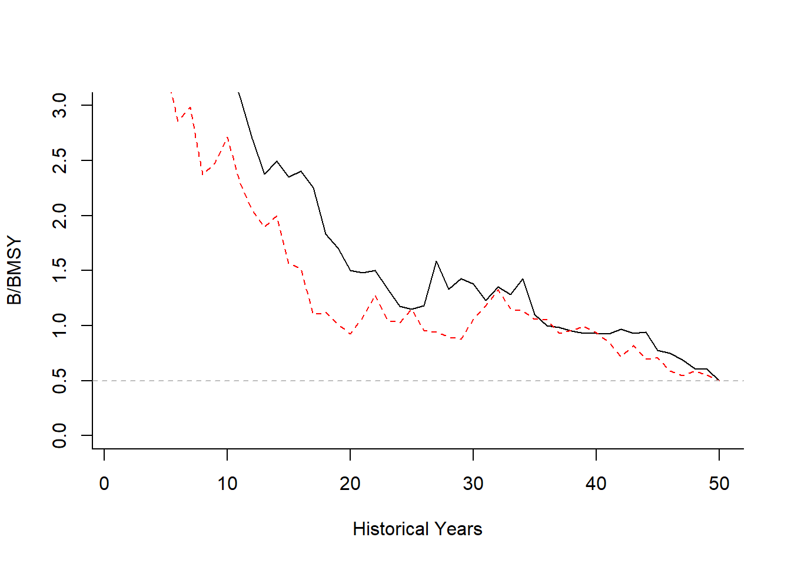

E Changes
Important changes - DLMtool V4.1 and greater
DLMtool V4.1 introduced some important changes to the Operating Model object. The number of simulations (nsim) and the number of projection years (proyears) are now slots in the OM object, rather than arguments to runMSE (see Management Strategy Evaluation). This change was required to allow users to specify their own custom futures for parameters like M, growth, etc. The OM object also now has a new random seed slot in the operating model, which ensures that the MSE results are now exactly reproducible.
You can modify the number of simulations, the number of projection years, or the value of the random seed by modifiying the relevant slots in the OM object:
OM@nsimOM@proyearsOM@seed
Important changes - DLMtool V4.5 and greater
Since DLMtool V5.0 the following slots have been added to the OM object:
OM@intervalOM@pstarOM@maxFOM@reps
This was done so that an OM object is completely self-contained and includes all information used in the MSE.
E.1 Bio-Economic Model
Since DLMtool V5.4+ there is now the option to include a simple bio-economic model to control the effort dynamics of the fishery in the projection years.
Without the bio-economic model, the total allowable catch (TAC) recommendation provided by an MP is caught each year (assuming no implementation error, the vulnerable biomass > TAC,and the Fmax constraint is not exceeded). In cases where the vulnerable biomass is low, fishing effort can increase to very high levels. Similarly, a total allowable effort (TAE) recommendation prescribes the fishing effort each year, regardless of the level of catch that is obtained with that effort.
With the bio-economic model the TAC and TAE act as total catch and effort limits respectively, but change in fishing effort each year is based on recent profits.
Effort \(E\) in year \(t+1\) is calculated as:
\[ E_{t+1} = \text{max}(E_t + \eta P_t, 0)\] where \(\eta\) is a responsiveness parameter that determines the rate that fishers enter or leave the fishery based on the profit \(\left(P_t\right)\) from the current year \(t\).
Profit is calculated as:
\[P_t = R_t - C_t\]
where \(R_t\) and \(C_t\) are total revenue and total cost in year \(t\). Note that in this context, normal profits of the fishing operations are included in the total costs (e.g., operating expenses + crew salary + minimum profit required to make the business venture feasible), and \(P\) refers to profits in excess of this normal profit; sometimes referred to as resource rent.
As in any industry, profits above the normal profits (i.e, positive resource rents) will attract new entrants to the fishery (assuming an open access fishery). Conversely, when the profits are negative, fishers are able to earn a higher income in an alternative livelihood and will leave the fishery.
E.2 Key Bio-Economic Parameters
Currently, the bio-economic model is specified using the custom parameters (cpars) feature of DLMtool. There are three required parameters for the bio-economic model: CostCurr, RevCurr, and Response.
E.2.1 Current Cost and Revenue
The first two parameters, CostCurr and RevCurr, are used to specify the cost of the current effort and the revenue of the current retained catch respectively.
As a simple example, suppose the fishery is currently close to a bio-economic equilibrium (revenue = cost), with the cost of the current effort around $10,000 and the revenue from the current catch a similiar value.
These can be specified as a vector of length OM@nsim using the cpars feature. First we create an Operating Model (OM). For simplicity, well assume there is no observation or implementation error and only include a few simulations:
OM <- new("OM", Stock=Albacore, Fleet=FlatE_NDom, Obs=Perfect_Info, Imp=Perfect_Imp) # new OM object
OM@nsim <- 3 # three simulations
OM@qinc <- c(0,0)
OM@qcv <- c(0,0)Note that we also assume that there is no inter-annual variability or long-term trends in catchability. Directional changes in catchability will have a signficant impact on the profitability of fishing.
We then specify the cost of current effort (CostCurr) and revenue of the current catch (RevCurr) using cpars, with the parameter values drawn from uniform distributions:
## [1] 9872.198 9543.825 10209.684## [1] 10157.690 9749.856 9800.055Profit in the current year (i.e., the last historical year in the simulation) is:
## [1] 285.4920 206.0309 -409.6292E.2.2 Fishing Effort Responsiveness
The responsiveness parameter (\(\eta\)) is specified with the cpars$Response. Note that in DLMtool fishing effort is always calculated relative to the fishing effort in the last historical year (i.e., current effort). Therefore, \(\eta\) describes the units of current effort expected to enter/leave the fishery per unit-profit.
Suppose the current cost of fishing effort is $10,000 and involves 200 days of fishing. This means that each day of fishing must earn revenue of at least $50 to make it worthwhile to go fishing, and each $50 in profit (loss) will result in one more (less) day fishing. Put another way, each dollar in profit (loss) will result in \(\frac{1}{50} = 0.02\) additional (fewer) days of fishing.
Given that current effort is 200 days, \(\eta\) is calculated as \(\frac{0.02}{200} = 0.0001\):
Effort at the beginning of the first projection year is then:
\[ E_{1} = \text{max}(E_0 + 0.0001 P_0), 0)\] As effort is always relative to the last historical year, \(E_0 = 1\).
Continuing our example:
## [1] 1.0285492 1.0206031 0.9590371E.3 Changes in Cost and Revenue
By default cost per unit effort and revenue per unit catch are assumed to be stationary. Average annual increases or decreases in cost and revenue can be included using the CostInc and RevInc parameters.
Suppose costs are expected to increase by 2 - 3% per year:
and the price per-unit-catch is assumed to either increase or decrease by up to 1% per year:
ind <- as.matrix(expand.grid(y=1:OM@proyears, sim=1:OM@nsim))
CpE <- RpC <- matrix(NA, nrow=OM@proyears, ncol=OM@nsim)
CpE[ind] <- (1+OM@cpars$CostInc[ind[,2]]/100)^ind[,1]
RpC[ind] <- (1+OM@cpars$RevInc[ind[,2]]/100)^ind[,1]
ylim <- range(c(CpE, RpC))
par(mfrow=c(1,2))
matplot(CpE, type="l", xlab="Projection Year", ylab='Change in cost per-unit-effort',
bty="l", lwd=2, ylim=ylim)
matplot(RpC, type="l", xlab="Projection Year", ylab='Change in price per-unit-catch',
bty="l", lwd=2, ylim=ylim)
Its clear that this fishery is going to be a lot less profitable in the future!
For simplicity we will assume no change in the marginal cost and revenue in the future for the remaining examples:
E.4 Bio-Economic Model & MPs
E.4.1 With a TAC
When an output control is used, the effort required to catch the TAC is first calculated. Then, if the required effort is greater than the actual effort in the fishery, the entire TAC is not caught. That is, the retained catch in that year is less than the TAC.
If the effort required to catch the TAC is less than the effort entering the fishery at the beginning of the year, fishing is assumed to cease for the year, and the actual effort is less than that calculated by the bio-economic model. In these cases the TAC is limiting effort while the fishery is still profitable. However, the potential fishing effort for that year is still used to calculate potential effort for the following year.
For example, suppose, based on the profit from the previous year, potential fishing effort at the beginning of the year is 300 days, but because of a restrictive TAC only 100 days fishing is required to catch the entire TAC. Potential effort for the following year is calculated from the profit from the previous year and the effort available at the beginning of the previous year (i.e., 300 days).
E.4.2 With a TAE
In an fishery managed with an effort control the maximum allowed effort is determined by the management procedure. Actual effort is determined by the bio-economic model, but cannot exceed the total allowable effort (TAE) set by the MP, i.e, the actual effort can be less than the TAE. Latent effort is recorded in MSE@Misc$LatEffort.
E.4.3 Without TAC or TAE
For fisheries without a TAE or TAC control (e.g., a size limit or spatial closure) the fishing effort each year is determined by the bio-economic model.
E.5 Some Examples
First well define a Management Procedure that returns no management recommendations:
Here fishing effort is determined by the bio-economic model. Note that if the bio-economic model is not used, this MP will be equivalent to curE, where fishing effort in the future is fixed at the current level.
We select four management procedures: NMref - our new custom MP with no management, curE - a TAE fixed at the current historical level, Itarget1 - an output control where the TAC is adjusted based on a trend in the index, and ItargetE1 - an effort control where the TAE is adjusted based on a trend in the index.
We demonstrate the bio-economic model by plotting the biomass, catch, effort, cost, profit, and revenue for a single simulation and several MPs. See the last section for the plotting code.
The plots show projections of a single simulation of: a) Depletion (solid) and BMSY (dashed), b) Catch (solid) relative to current catch (dotted) and where applicable the TAC (dashed), c) Effort (solid) relative to current effort (dotted) and where applicable the TAE (dashed), and Cost, Revenue and Profit (dotted line indicates 0 profit).
The plot of simulation 2 of the first MP NMref shows that the projected fishing effort decreases in the first several years as profits are negative, and increases to well above the current level later in the projection period as profits increase.

The curE MP shows the same pattern in fishing effort for the first ~30 years, but the TAE constraint limits the maximum effort to the current effort (i.e, 1).

In several years the TAC set by the Itarget1 MP is not able to be caught due to insufficient effort in the fishery (Catch < TAC).

Similiarly, while the ItargetE1 MP decreases the TAE in the first several years of the projection period, the large negative profits result in a larger decrease in fishing effort (Effort < TAE).

E.6 Future Developments
Future versions of DLMtool will extend the bio-economic model to include additional features, including:
- ability to include price by size class
- ability to specify an existing limited entry fishery
- inter-annual variability in cost and price
- include cost of fishing by area
- include discount rate to calculate net present value of catch
- specify the number of years profit is calculated to determine fishers entering/leaving fishery (currently previous year)
- separate response parameters for increasing and decreasing fleet
E.7 Plotting Code
The code to produce the plots:
library(dplyr); library(ggplot2); library(cowplot); library(tidyr)
Plot <- function(MSEobj, mp=1, sim=1) {
Depletion <- as.vector(MSEobj@SSB[sim, , ])/MSEobj@OM$SSB0[sim]
BMSY_B0 <- MSEobj@OM$SSBMSY_SSB0[sim]
MPs <- rep(MSEobj@MPs, MSEobj@proyears)
Years <- rep(1:MSEobj@proyears, each=MSEobj@nMPs)
currCatch <- apply(MSEobj@CB_hist[,,MSEobj@nyears,], 1, sum)
Catch <- as.vector(MSEobj@C[sim, , ])/currCatch[sim]
TAC <- as.vector(MSEobj@TAC[sim,,])/currCatch[sim]
Effort <- as.vector(MSEobj@Effort[sim, , ])
TAE <- as.vector(MSEobj@Misc$TAE[sim,,])
Cost <- as.vector(MSEobj@Misc$Cost[sim, , ])
Revenue <- as.vector(MSEobj@Misc$Revenue[sim, , ])
Profit <- Revenue - Cost
DF <- data.frame(MP=MPs, Year=Years, Depletion=Depletion, BMSY_B0=BMSY_B0,
Catch=Catch, TAC=TAC,
Effort=Effort, TAE=TAE,
Cost=Cost, Revenue=Revenue, Profit=Profit)
MP1 <- MSEobj@MPs[mp]
pDF <- DF %>% filter(MP==MP1)
LineSize <- 1
pDF2 <- pDF %>% gather("key", "value", 3:4)
pDF2$key <- factor(pDF2$key, levels=c("Depletion", "BMSY_B0"), ordered = TRUE)
p1 <- ggplot(pDF2, aes(x=Year, y=value, linetype=key)) + geom_line(size=LineSize) +
theme_classic() + expand_limits(y=c(0,1))
pDF2 <- pDF %>% gather("key", "value", 5:6)
chk <- pDF2 %>% filter(key == "TAC") %>% select(value)
if (all(is.na(chk$value))) pDF2 <- pDF2 %>% filter(key != "TAC")
p2 <- ggplot(pDF2, aes(x=Year, y=value, linetype=key)) + geom_line(size=LineSize) +
theme_classic() + expand_limits(y=c(0,1)) +
geom_abline(slope=0, intercept = 1, lty=3, color="darkgray")
pDF2 <- pDF %>% gather("key", "value", 7:8)
chk <- pDF2 %>% filter(key == "TAE") %>% select(value)
if (all(is.na(chk$value))) pDF2 <- pDF2 %>% filter(key != "TAE")
p3 <- ggplot(pDF2, aes(x=Year, y=value, linetype=key)) + geom_line(size=LineSize) +
theme_classic() + expand_limits(y=c(0,1)) +
geom_abline(slope=0, intercept = 1, lty=3, color="darkgray")
pDF2 <- pDF %>% gather("key", "value", 9:10)
p4 <- ggplot(pDF2, aes(x=Year, y=value, color=key)) + geom_line(size=LineSize) +
geom_line(aes(x=Year, y=Profit, color="Profit"), size=LineSize) +
theme_classic() + expand_limits(y=0) +
geom_abline(slope=0, intercept = 0, lty=3, color="darkgray")
suppressWarnings(
p <- plot_grid( p1, p2, p3, p4, ncol=2, labels="auto")
)
title <- ggdraw() + draw_label(MP1, fontface='bold')
plot_grid(title, p, ncol=1, rel_heights=c(0.1, 1))
}